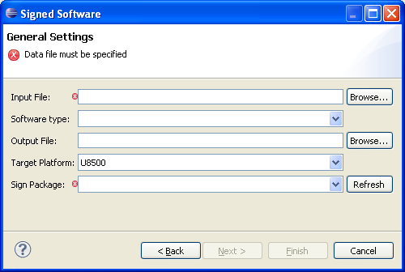
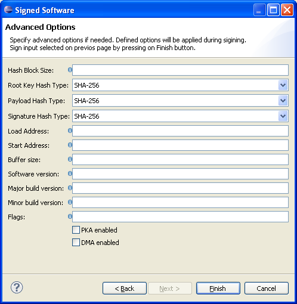

How to create signed software
The Signed Software Wizard uses local or remote sign server signing and creates U5500/U8500/M7400/L9540 signed software.
Pre-requisites
Please make sure relevant properties are set.
Instructions
Open the Signed Software Wizard by completing the following steps:
- In the Eclipse menu, select File -> New > Other... (or press Ctrl+N)
- Expand the Flash Kit category to make the Signed Software category visible
- Expand the Signed Software category to see the Signed Software
- Select the Signed Software and press Next
The following wizard will pop-up and the user must fill in correct values in order create signed software:

Required Fields:
- Input file: Enter or choose software input file.
- Output file: Enter or choose where the signed software output file should be generated.
- Software type: In many cases software type should be automatically detected, but it could be changed manually also.
- Target platform: Signing for different platforms may differ due to what it is necessary to specify the target platform for which the software should be signed.
- Sign package: Sign packages are pulled from sign server or local file system. Sign package is chosen here, in case of desychronization "Refresh" button could be pressed.
By clicking on Next button an Advanced Options page of the wizard is displayed and the user may enter optional information.
In case the user does not need to specify advanced settings for signing, it is possible to press Finish button directly from the first page of the wizard.
The software defined in the input field is signed when the user clicks on Finish button. The result of signing is saved on the location specified in output field of the wizard.
